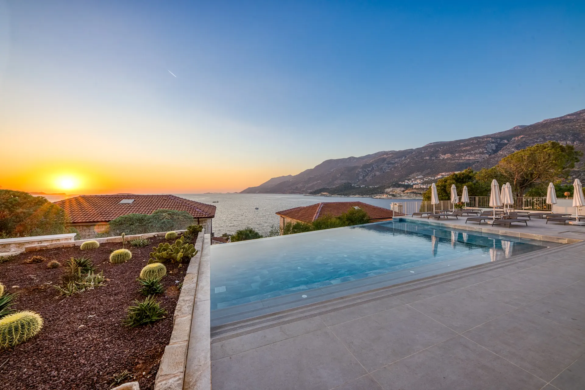
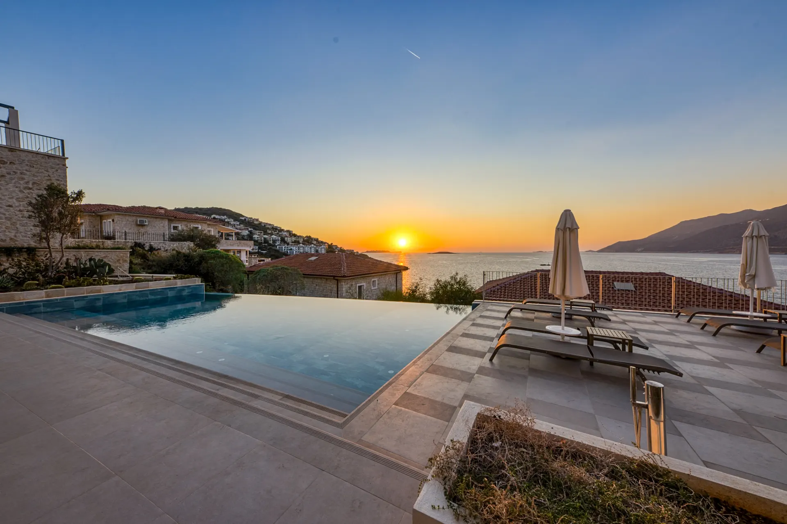
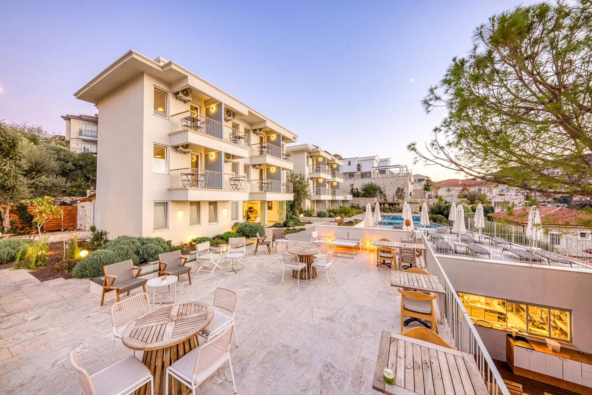
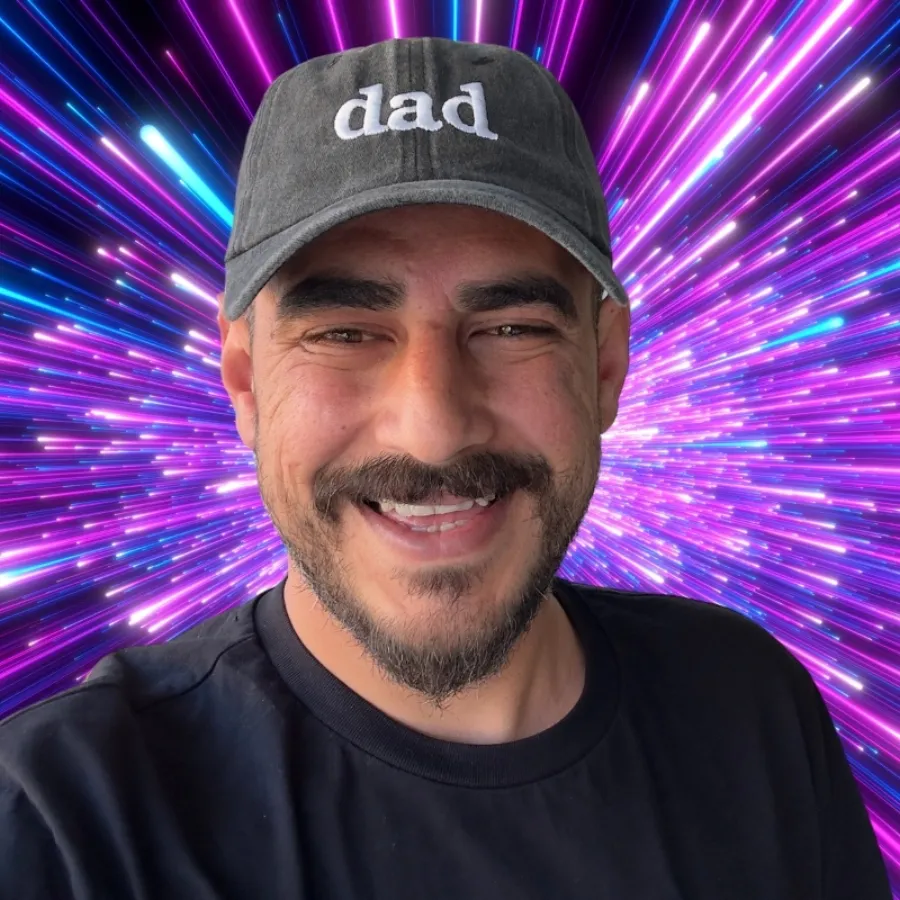

Kaş · Akdeniz · Dijital
Görüntüden ürüne.
Turizm ve yerel işletmeler için fotoğraf, içerik, marka ve dijital deneyimler kuruyorum.

Konaklama fotoğrafçılığıKaş, Antalya
01 / Ne yapıyorum
Güzel görünen işler değil, çalışan markalar kuruyorum.
Bir mekânı kadraja almakla başlayıp web sitesine, içeriğine ve büyüme sistemine kadar uzanan bütünlüklü işler üretiyorum.
02 / Seçili üretim
Akdeniz'den kareler.
Konaklama ve turizm markaları için ürettiğim görsel dünyanın küçük bir seçkisi.

Bu ilk seçki, mevcut yayın arşivindeki Ahmet Çötür çekimlerinden hazırlanmıştır. Ayrıntılı vaka çalışmaları yeni projeler doğrulandıkça eklenecek.
03 / Ekosistemİki stüdyo.
İki stüdyo.
Tek yaklaşım.
İçeriği, teknolojiyi ve büyümeyi birbirinden ayırmıyorum. SocialKaş ve VOYN, aynı düşüncenin iki farklı üretim alanı.
Bir işin
tamamını
görmek.
Hikâyeyi bul
Mekânın, markanın ve insanın gerçekten farklı olan tarafını netleştiririm.
Görsel dili kur
Fotoğraf, film ve tasarımı aynı hikâyenin parçaları olarak üretirim.
Dijital deneyime dönüştür
İçeriği web, ürün, sosyal medya ve reklam yüzeylerinde çalışan bir sisteme taşırım.
Ölç ve geliştir
Yayına alınan işi davranış ve gerçek geri bildirim üzerinden sürekli iyileştiririm.

Yeni proje · 2026
Seni de dijitalde iyi gösterelim.
Mekânını, markanı veya projeni daha güçlü gösterecek fotoğraf, video, web sitesi ve sosyal medya akışını birlikte kuralım.